We have a plot, known as a dream
Information Skies (2017) by Metahaven
The fighter sits. His long nailed girlfriend is absent-minded on her phone. We adorn. We are silver. We are dragons, newborn from the mouth of an unverified source. Desperately seeking, we seem to have found that source. The road through the forest, the clearance. Each other, another.
The supermarket opens to a queue of early risers. The mundane is only the best excuse to talk. Let's talk about the apartment or about the dishes, and who left them unwashed in the sink. Our daily rituals are paintings, our shopping lists, poems. Full circle, face the void.
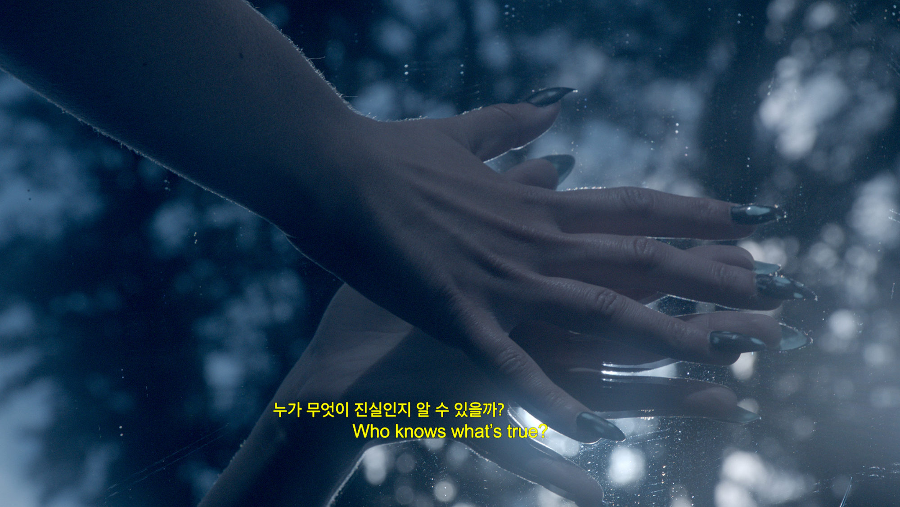
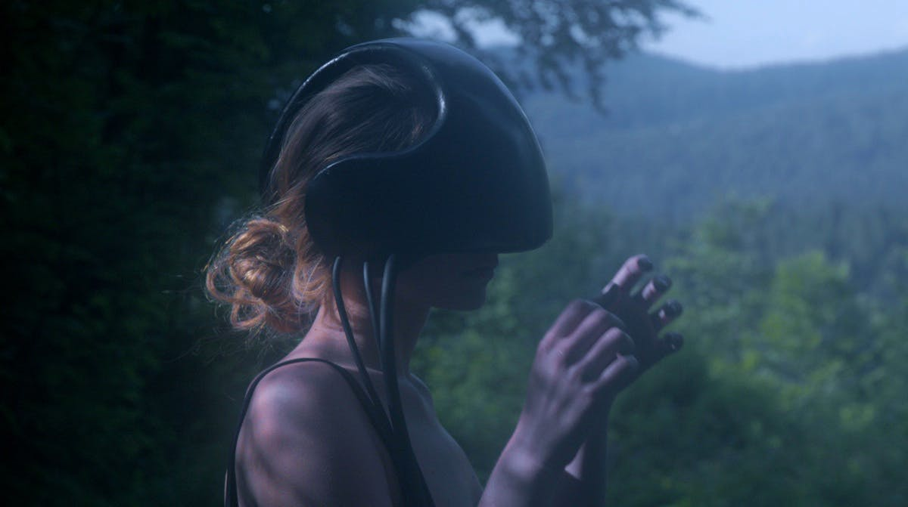
Still frames from Information Skies (2017), by Metahaven, a short film that questions how deep immersion in digital augmentation, combined with our persisting emotional limits as humans, is altering our capacity to decide on what constitutes reality.
The hole in the sky left as a courtesy by the last person who used the bathroom. The weight of the soul measured in terabytes. I'm looking at you, but I'm staring at the tundra. With my eyes closed, at least I can remember.
We have a plot, formerly known as dream. Now, we have a video to prove it. Everyone can see myself from the emptiness within, an eyeless face inside an idea.
Someone just disappeared into the station. Hold a crowd where I brought a device. Our future. My truth for all.
Suicide bombers are also people. Think about it, we all have mothers. When we were born we were not allowed to die. Death is virtual reality. Catch up with this world. Watch the mothers wave their children goodbye, crying.
 Sequence from Information Skies (2017), by Metahaven.
Sequence from Information Skies (2017), by Metahaven.
The father's bigger grave sweating scorching heat in a step of pixels. There is no one in the grave. Their only relief is bottled water.
The fighter watches TV. His long nailed girlfriend is still on snapchat. We have an OK life. We are gold-plated. We are the caretakers of the hunt inside the theater. On our quest there was nothing at first, but then that sky on the second night. Each truth, each galaxy an option.
That large screen ahead is beaming with stars, waiting and blazing with signs of you being right, that's what they say. All this time, they say, together, metallic, lit from behind, shared a thousand times and counting. The grim cost holds on for support brings much needed food and foul false hope. Search through that past, recall what you read somewhere sometime in school.
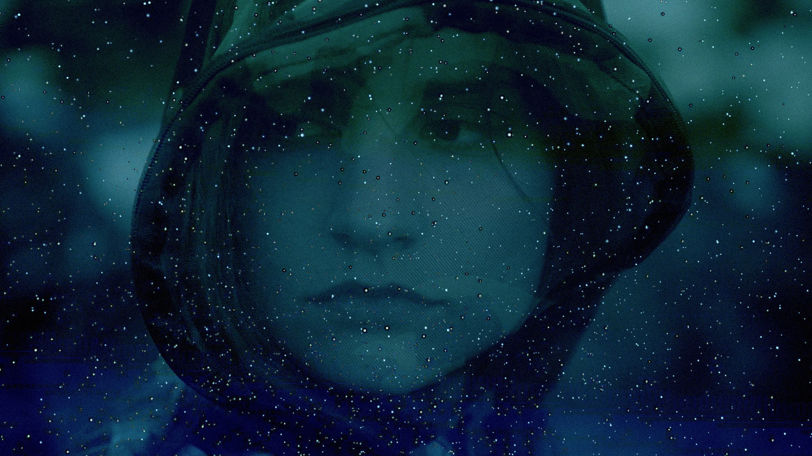
Still frame from Information Skies (2017), by Metahaven, a speculative exploration of human emotion towards the virtual world and reality itself.
These faltering batteries dim the light of your echo, our kiss, in a fur coat of darkness. I'm holding you close. I can see through the mountains blinded by color. Please help me, I'll pay you much later.
We have a plot, formerly known as dream. Now, we have a video to prove it. Everyone can see myself from the emptiness within, an eyeless face inside an idea.
Who knows what's true? Who knows what's not? Mother knows. A parallel house, mother knows where. He's alive. She makes him breakfast. The love of the morning. Dare laughter. Sounds of the kitchen. Curtains waving. Windows open. Sign in to watch the sequel.
Nothing happened of the sort. There still is a chance. No proof, only rumors. Defend us! Please help her. She'll pay you for the key to the door of that house. Everyone lives. Everything wants. No limits, only visuals.
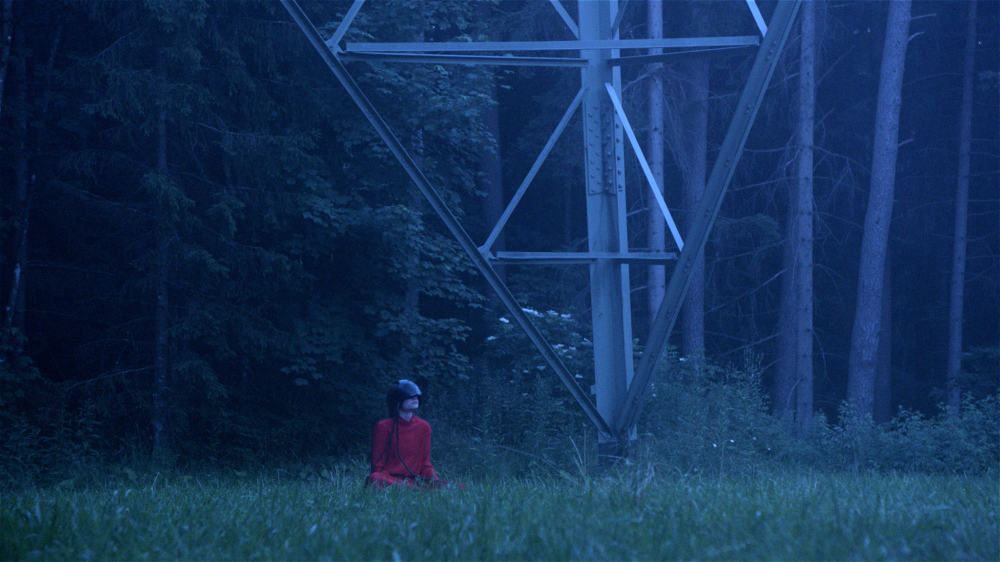
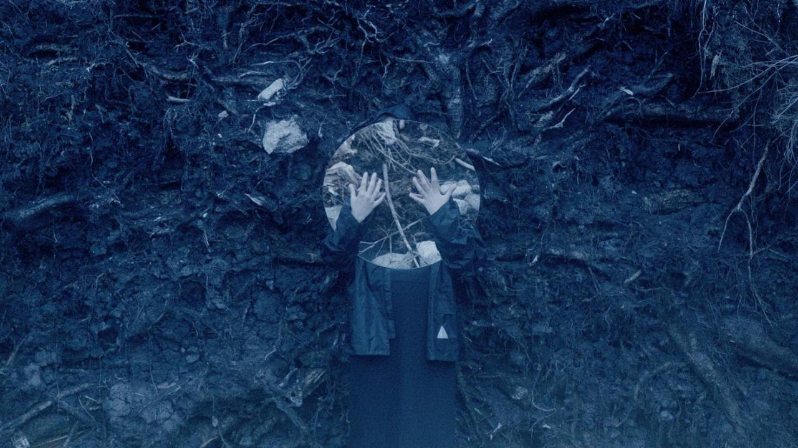
Still frames from Information Skies (2017), by Metahaven, a short film created within the practice of speculative desgin.
Our laptops, our visors, globes turned dark, short on imagination. Movable titanium. Switch off the haunted gaze. A graceful landing on the soil. The territory. The way things were is a trauma and a luxury. As readily, a friendly older man sits down with us and gives us tea. He asked us to agree that there was no house and there were no mountains. An endless grassland with nothing there, how could we disagree?
We grapple for words, gasp for air for the judge has not seen what we have seen. Your Honor, we reply we were just there. There are mountains all around us. We fought like dragons. Here's our flag of digital satin, and our mother of bleached blue linen, and her forlorn son back home. Our brother, hear his joyful laughter.
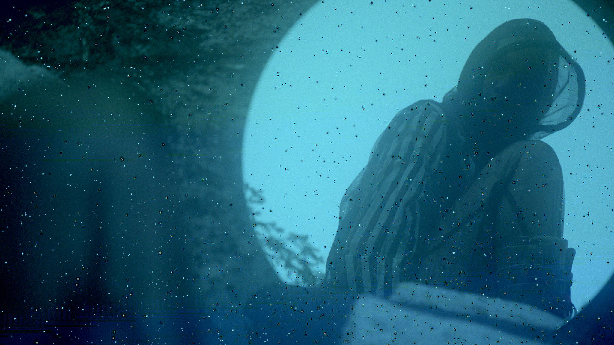
This is not a dystopia but rather a poetically rendered document of the current evolutionary mutations that concern changes in communication tools and reality processing. The universes it opens shed light upon the upcoming worlds.
You must be dreaming, says the man, or you spend too much time elsewhere. Nowhere in this barren land are mountains. I haven't met the woman you seem to know so well and hold so dear. Her son, I know of him. He killed himself and others. There's nothing left but a name that's in the papers.
Hidden in the high grass laid a fighter and his long nailed girlfriend. In her still encampment, they watched the stars again, thanking nature, machines, mother, unknown movements for their newfound harvest on the ridge—strawberries.
Script from Information Skies (2017), by Metahaven
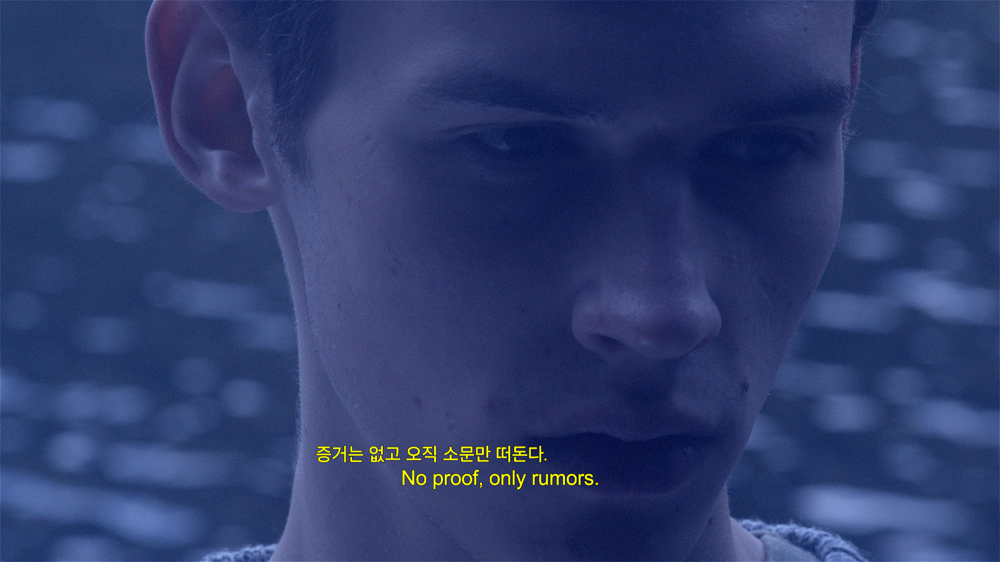
Information Skies takes place in a forest somewhere in the not-too-distant future. The film, with an otherworldly soundscape, fuses three genres—live action, anime-like animation and digital abstraction—creating fragmented territories, attractive and terrifying at the same time.
The Black Forest is the primal place where the fairy-tale unfolds. Metahaven describe their work on Information Skies as one of the most peculiar shooting experiences: sharing a cabin by the lake in the wilderness with the entire crew to make a film on virtual reality and digital communication was an insightful move indeed. And, in all senses, it was a down-to-earth move too: in order to talk about information one must necessarily take a step outside the technological realm and observe its flows everywhere, notably on the levels of much greater, non-human magnitudes.
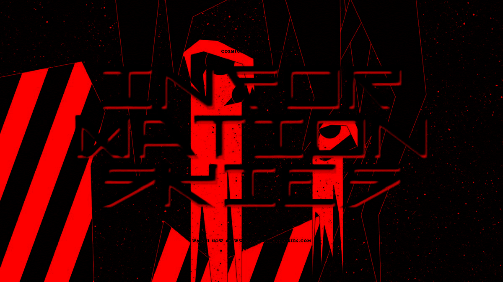
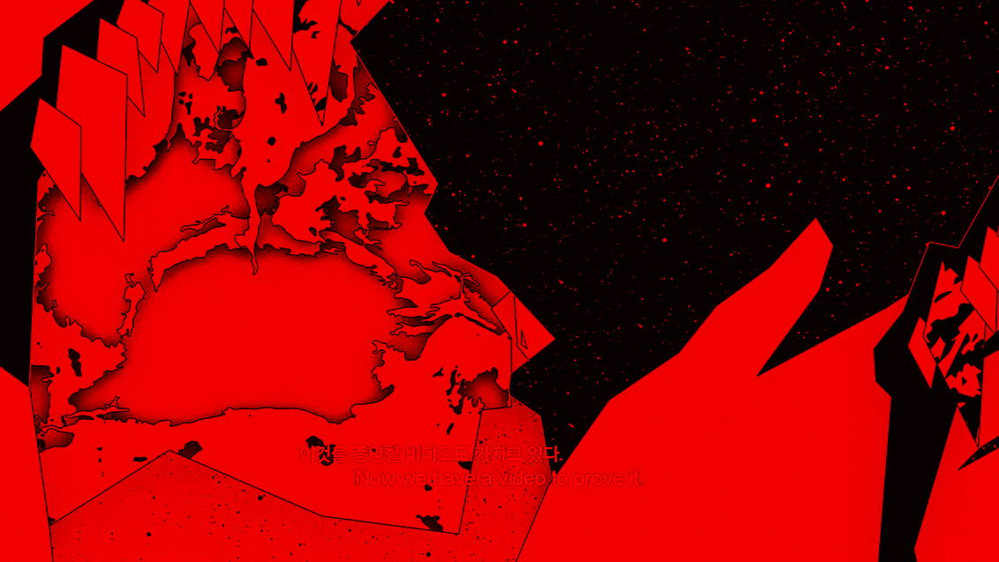
Still frames from Information Skies (2017), by Metahaven.
The Hansel and Gretel of the fairy tale — told in Hungarian with artfully implanted Korean and English subtitles — are a young couple wandering in subdued crepuscular landscapes as well as in galaxies of pixels. “We are dragons, newborn from the mouth of an unverified source” — with VR headsets on, immersed in the greenery, or gearless, catching sunlight that comes through the clouds and makes the waves on the lake shimmer gently, they stay connected to a sublime fantasy realm presented in the film by means of minimalist animation, indulging in its fragmentation to embrace the true integrity: “Desperately seeking, we seem to have found that source, the road through the forest, the clearance, each other, another”.
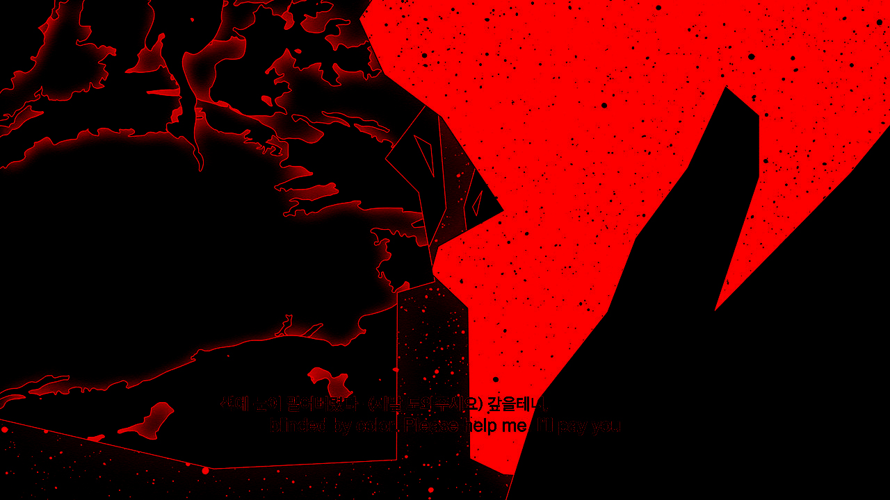
Still frame from Information Skies (2017), by Metahaven.
Along with the damp landscapes of the Black Forest and space anime, Information Skies comprises yet another visual dimension — that is, the graphic framing in grey, blue and indigo, at times resembling torn and melted film or, perhaps, a deconstructed digital control panel. Metahaven perspicaciously call it “interfacial ruins”. Ruins are inevitably a beginning, a potentiality; they have an “existentialising function”, as coined by Félix Guattari in his essay Cracks in the Street: “Cracks in the text of the State, cracks in the state of things, in the state of places, in the state of norms… Cracks leading us despite ourselves to new social practices and to new aesthetic practices which will reveal themselves as less and less separate from each other, and more and more in complicity”. —Félix Guattari, in Cracks in the Street
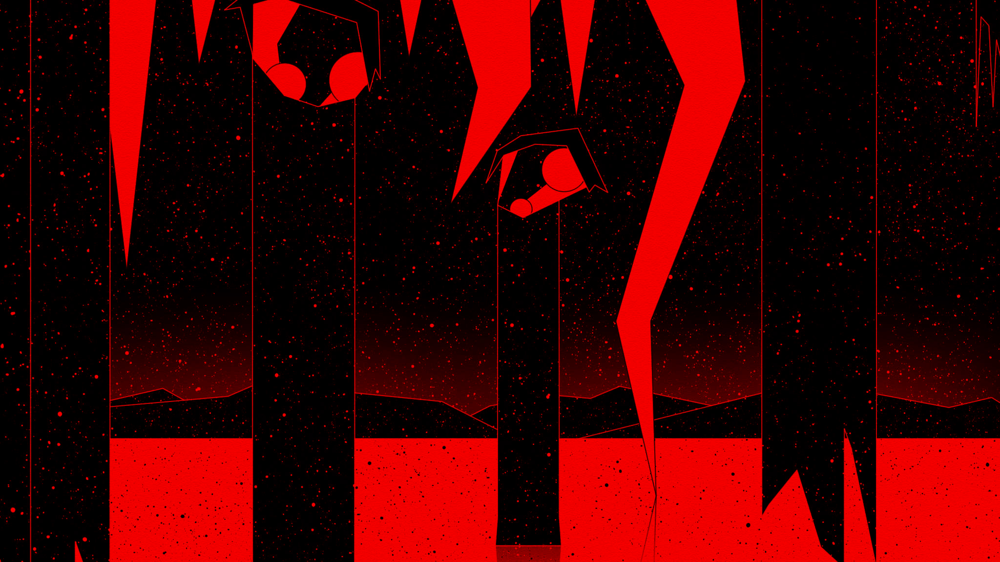
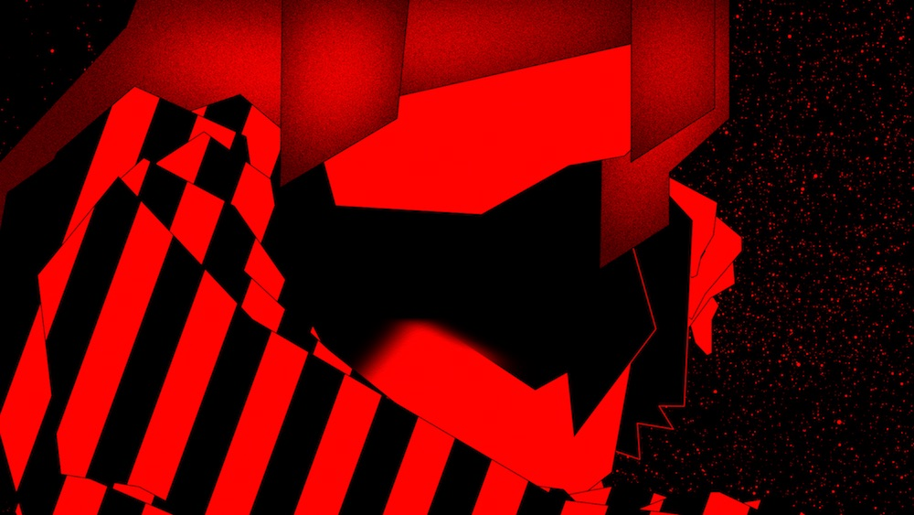
Still frames from Information Skies (2017), by Metahaven.
Information Skies is not a dystopia but rather a poetically rendered document of the current evolutionary mutations that concern changes in communication tools and reality processing. Metahaven succeed at grasping the essence of these changes by virtue of their creative origins. Leaning on graphic design as a primary and ultimate instrument for storytelling — film being incorporated as yet another one of its extensions — they find themselves at the heart of these mutations. As early as 1992, Guattari described how “computer-aided design leads to the production of images opening on to unprecedented plastic Universes”. Metahaven perfectly embody this thesis: in their work, form blends with content, enlarged visual tropes and symbols (which might unjustly be overlooked by cinema snobs) serve as pivot points for process of the production of meaning. And the universes it opens shed light upon the upcoming universes.
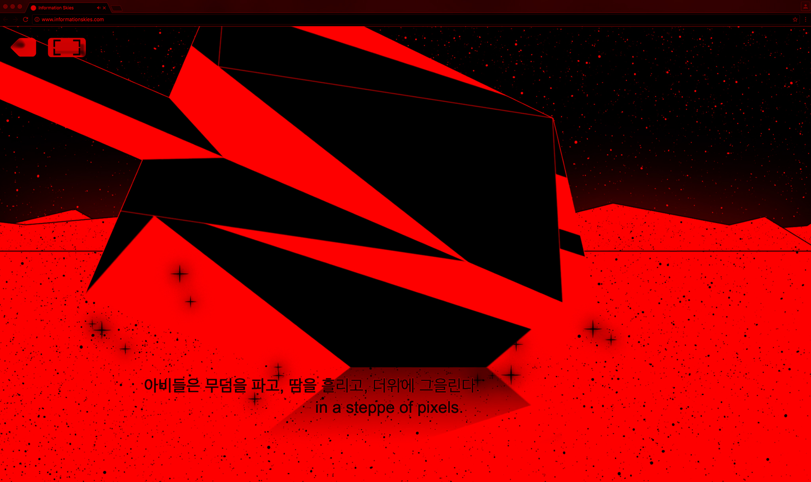
Still frame from Information Skies (2017), by Metahaven.
Information Skies was commissioned by the 11th Gwangju Biennale (2016), alongside the mural featuring the inscription “Cosmic Disinformation”, against the backdrop of an anime-style portrait of a woman. It is a still from the film that shows the crying mother of a suicide bomber, one of the metaphorical collective images that took shape in the narrative. Being human stands for some very simple things, even and especially in the times when the world is no longer what it used to be — this is what Metahaven keep talking about. And the world keeps changing — this is the way it lives on.
Lesia Propenko (2016), excerpt for Vdrome on Information Skies, by Metahaven